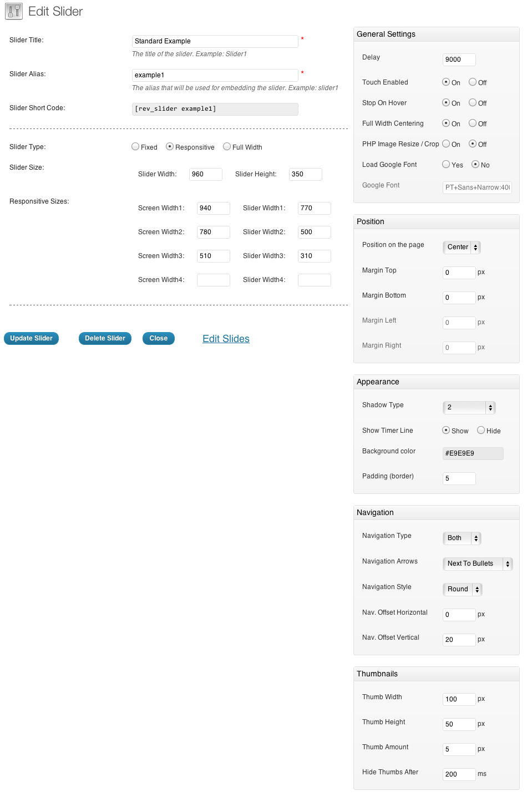
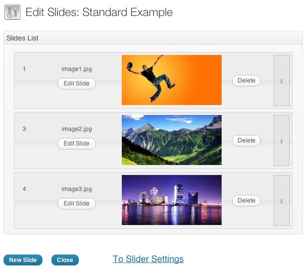

Revolution Responsive WP jQuery Slider
The Documentation
- Created: 07/30/2012
- latest Update: 05/11/2012
- By: ThemePunch
- www.codecanyon.com/user/themepunch
- Email: info@themepunch.com
For support please checkout http://themepunch.ticksy.com !
Install
This part of the documentation is going to cover, in a step by step instruction the installation of WP Plugins on your WordPress blog in general.


Slider
After pressing the "Create New Slider" button you will reach a form where you are asked to enter a Slider Title (used for the Slider overview in this backend) and a Slider Alias (a slug that is used to implement the Slider in your WP later, so keep it simple with no spaces and special chars).
You are also prompted to enter the Sliders Basic Settings, a Slider Title (for you to remember the Slider by) and a Slider Alias (please do not use special characters or spaces here, this defines the shortcode for you to use in your content).
The options in the boxes on the right side (General Settings, Position, Appearance, Navigation, Thumbnails) have helping Tooltips on mouseover so they are not explained here.
The Slider Type can be fixed (not responsive, fix dimensions), responsive (changes depending on the size of its max. sizes given later in relation to the screen size) or fullwidth (always 100% in width of the screen size, but height keeping the aspect ratio).
The Sizes section is needed to fit the slider in all screen sizes needed. The height of the slider will always be calculated to keep the aspect ratio from the max width and height given in the Slider Size line.

Slides
The next step is creating/editing slides. You get there by just clicking on "Edit Slides" in the Slider Form window.
Just press "New Slide" and the native WP Media Upload dialog window will appear. Choose or Upload the slide's background image, choose "Full Size" and then "Insert Into Post" (all like you are used to it in your WP editor). You can always click on the pic to change it.
Use the arrow handles on the right side to change the slides position in the slider (top to bottom = first to last slide to be shown) or delete it with the "Delete" button.
The "Edit Slide" leads you to the next chapter "Slide".

Slide & Creative Layers
In the "Edit Slide" view you see the heart of our plugin. The drag&drop Caption editor.
But first please note that you have another chance here to change the background image with the "Change Image" button.
To create a Layer (Caption, Image or Video) press the button "Add Layer" or "Add Layer: Image". In case of a text layer a basic layer will be created you can use the "Text" field in the Layer Params to change the caption on it. The "Style" selectbox shows some basic styles (CSS classes) you can use to style the caption (you can always add own CSS classes to this field or edit the existing ones via the "Edit CSS File").
In case of an Image Layer you will see the native WP Media Uploader again. In case of a Video Layer you will prompted to a custom Video selection wizard.
You now can move the Layers around via drag&drop or type in the x and y coordinate in the corresponding fields.
The "Layers Sorting" drag&drop list determines the Layers' z-index. This list specifies the stack order of an element.
An element with greater stack order is always in front of an element with a lower stack order.

Video Wizard:

Include in your WP
There are three ways to include the Slider in your Theme:
From the theme html/php use:
<?php putRevSlider( id or "alias" ) ?> - Example:
<?php putRevSlider("example1"); ?>
From the widgets panel:
Drag the "Revolution Slider" widget to the desired sidebar
From the post editor:
Insert the shortcode from the sliders table - Example:
[rev_slider example1]
Licenses
Used Assets
- Template demo images licensed from Fotolia for preview usage. Please do not attempt to rip the images from the preview!
- cssAnimate Plugin Great and Simple cssAnimate jQuery Plugin
- WaitForImages jQuery Plugin
- Touch Wipe jQuery Plugin
Support
If you face problems with the installation or customization of our product please do not hesitate to contact us via our support ticket system: